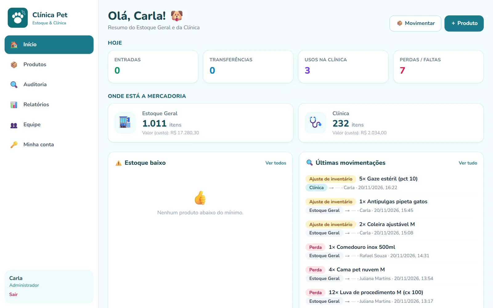
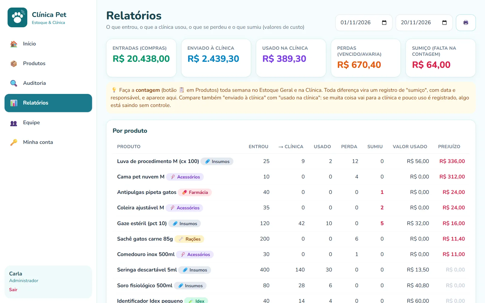
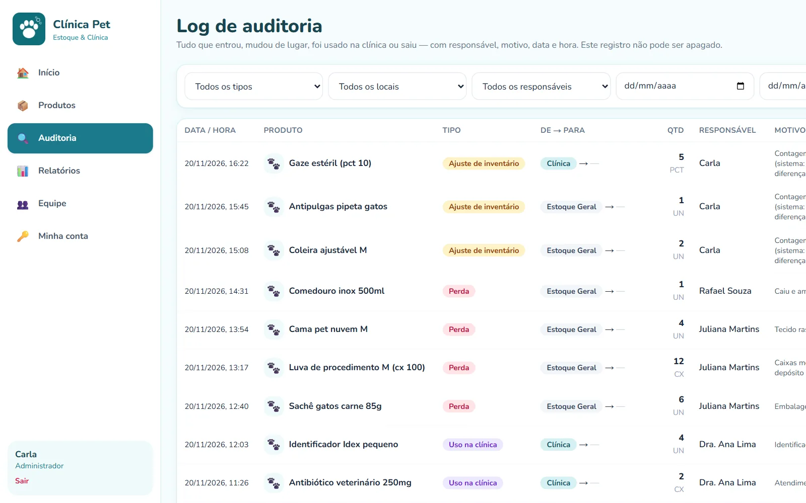
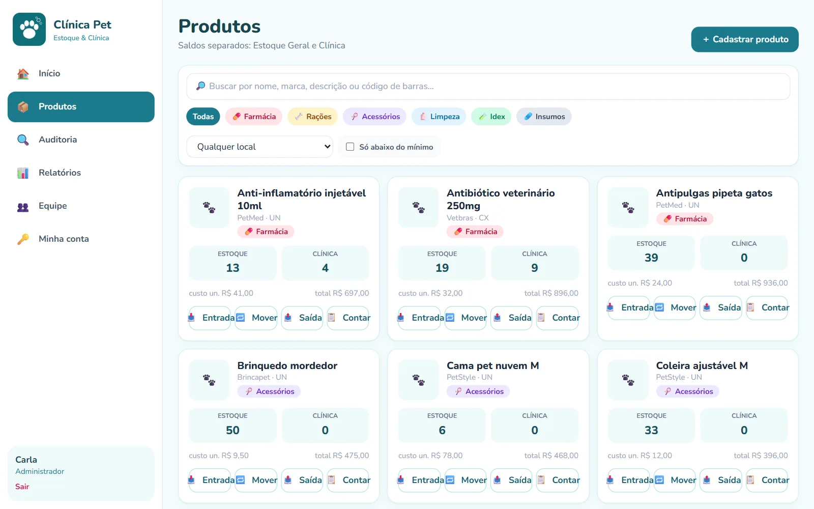
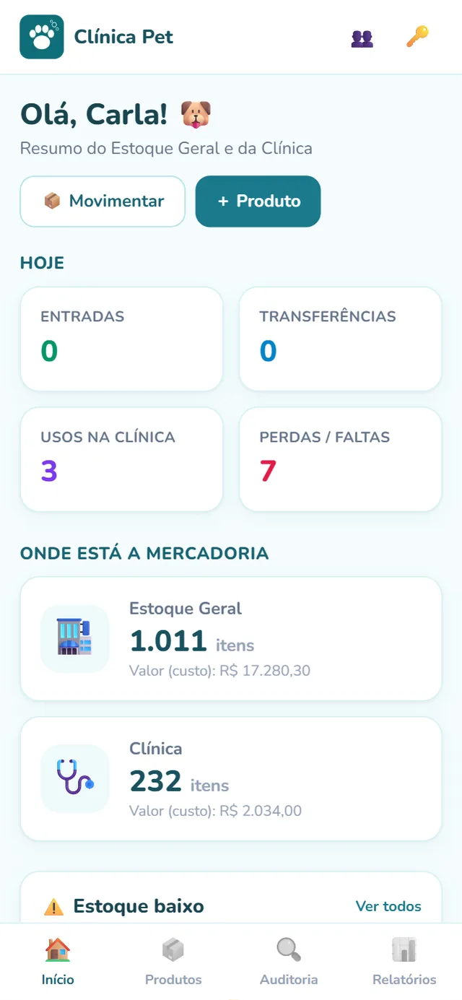
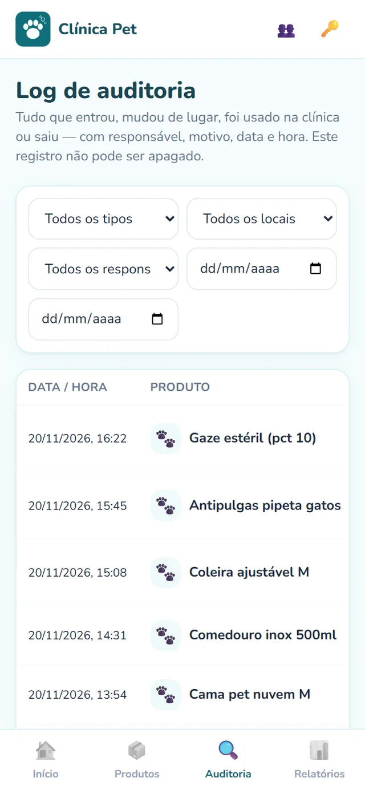
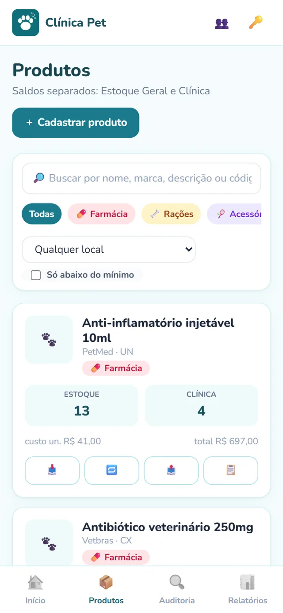

← Todos os projetos
Estudo de caso
Estoque da clínica
Versão enxuta do sistema de estoque, só com o estoque geral e a clínica: o que entra, o que a clínica usa e o que se perde ou some.
- Tipo
- Sistema web (API + painel)
- Meu papel
- Análise, desenvolvimento e testes
- Plataforma
- Web (PWA), celular e computador
- Banco
- PostgreSQL (Supabase)

Por que uma versão só de estoque
Nem toda clínica precisa de PDV e caixa. Esta versão tira vendas, preços de venda e caixa e foca no que mais gera prejuízo: insumo e medicamento que somem entre o depósito e o consultório.
- Enviado à clínica × usado na clínica: se muita coisa vai para o consultório e pouco uso é registrado, o relatório mostra.
- Perdas (vencido, avariado) e sumiços (diferença na contagem) separados, com valor em reais.



No celular



Tecnologias
NestJS, TypeORM, PostgreSQL (Supabase), Next.js 15, React, Tailwind CSS e PWA.